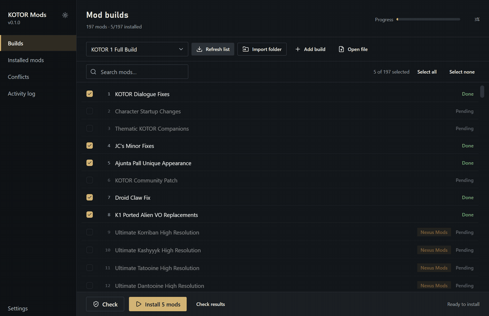

KOTORKOTOR 2Utilities
ModSync
Pick a mod build, tick the mods you want, and let it install them in the right order.



The desktop app, recorded on a test copy of KOTOR.
Description
Big KOTOR mod builds have dozens of mods that must go in a set order, with archives to unpack, files to copy or remove and patchers to run. The build's guide spells those steps out in an instruction file. ModSync reads that file and does the work for the mods you choose.
ModSync is not a mod build and contains no mods. You download each mod from the page its guide links to.
How it works
- Load the guideOpen the build's instruction file.
- Choose your foldersYour game folder, and the folder with the downloaded mods.
- Pick your modsOne by one, or a whole category at once.
- Check, then installThe check changes nothing. Then every mod installs in order.
Features
- Follows the guide's install order and dependencies
- Snapshot before installing, with one-click restore
- Opens ZIP, 7z, RAR, TAR and GZip archives
- Runs TSLPatcher-style patchers when you allow it
- Detects KOTOR, KOTOR 2 and the Aspyr release
- Spoiler-free names when the guide provides them
Requirements
- KOTOR or KOTOR 2 installed
- The instruction file for your mod build
- The build's mods, downloaded into one folder
- Free space for a copy of your game and mod folders
Installation
- Back up your game folder.
- Download ModSync and unzip it anywhere.
- Open it and follow the four steps above.
New to it? Try it on sample folders first. If an install fails, restore and start again.